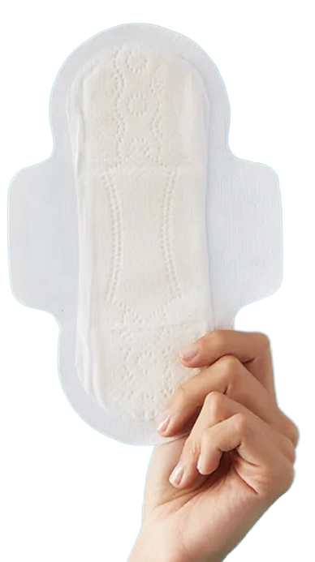
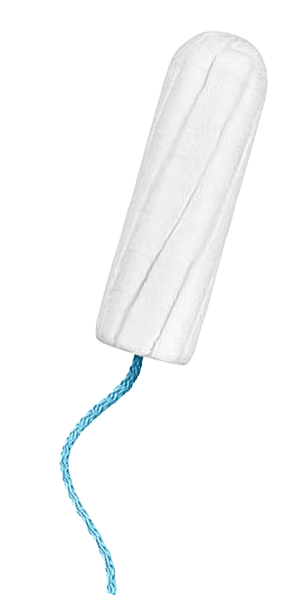
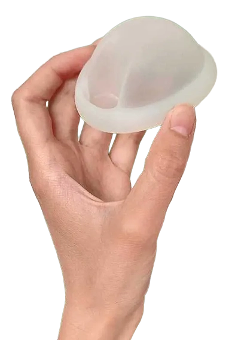
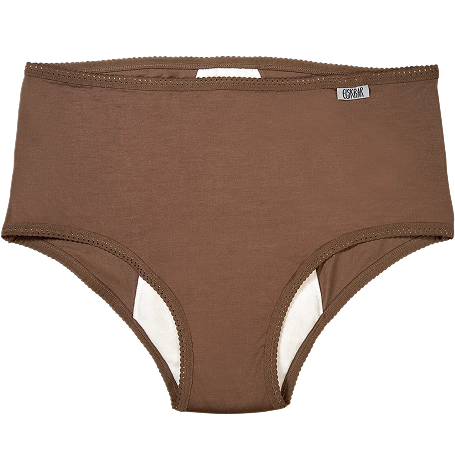
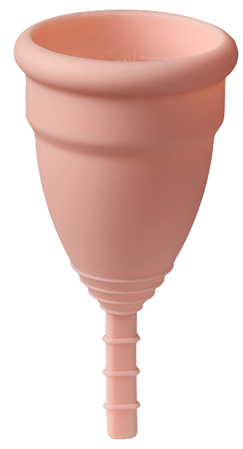

Hvad skal man vælge
Tryk på et produkt!
     Bind
+
Nemme at bruge og kræver ingen indsættelse.
Fås i mange størrelser og sugeevner.
Gode til begyndere og unge.
-
Skal skiftes hver 3–4 timer.
Kan føles klodsede og give irritation.
Ikke ideelle til sport eller svømning.
Engangsbind genererer meget affald og nedbrydes langsomt.
Bedst til når du bløder meget - da den har god sugeevne.
Tampon
+
Diskrete og gode til fysisk aktivitet.
Fås i forskellige størrelser.
Kan bruges i vand.
-
Risiko for TSS (Toxic Shock Syndrome) ved lang tids brug.
Kan forstyrre den naturlige pH-balance.
Kræver indsætning i skeden, hvilken kan være grænseoverskridende eller svært for nogle
Engangsprodukt med plastikdele, bidrager til affald og forurening.
Bedst til aktive dage, sport og svømning.
Menstruationskop
+
Genanvendelig i op til 10 år.
Kan bruges i op til 12 timer ad gangen.
Mindre risiko for TSS (Toxic Shock Syndrome) end tamponer.
-
Kræver tilvænning og korrekt indsættelse.
Ikke alle finder den komfortabel.
Meget miljøvenlig; én kop kan erstatte op til 2.400 tamponer
Bedst til alle former for blødning. Ideel til dem, der ønsker et bæredygtigt alternativ.
Trusseindlæg
+
Tynde og diskrete.
Gode til let blødning eller som supplement.
-
Begrænset sugeevne.
Skal skiftes ofte.
Ikke ideel til meget blødning.
Engangsprodukter genererer meget affald.
Bedst til pletblødning, opstart eller afslutning af menstruation.
Menstruationsdisk
+
Høj kapacitet og kan bruges under sex.
Mindre risiko for at bløde igennem.
-
Kan være svær at indsætte korrekt.
Ikke genanvendelig (medmindre det er en genbrugsversion).
Engangsdiske bidrager til affald - men genanvendelige versioner findes.
Bedst til pletblødning, opstart eller afslutning af menstruation.
Menstruationstrusser
+
Genanvendelige og komfortable.
Kan erstatte eller supplere engangsprodukter, som belaster miljøet.
Gode til begyndere og unge.
-
Dyrere produkt at skulle investere i.
Kræver vask og vedligeholdelse.
Mindre affald end engangsprodukter, men miljøpåvirkningen afhænger af brug og vask.
Bedst til let til moderat blødning, natbrug eller som backup.